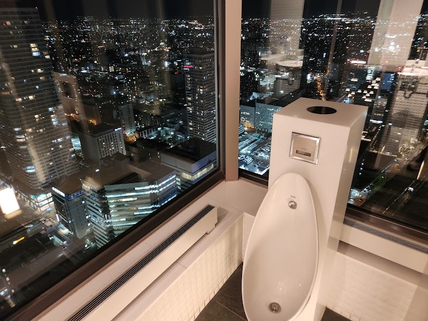
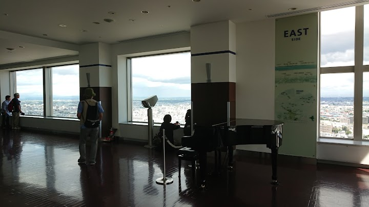
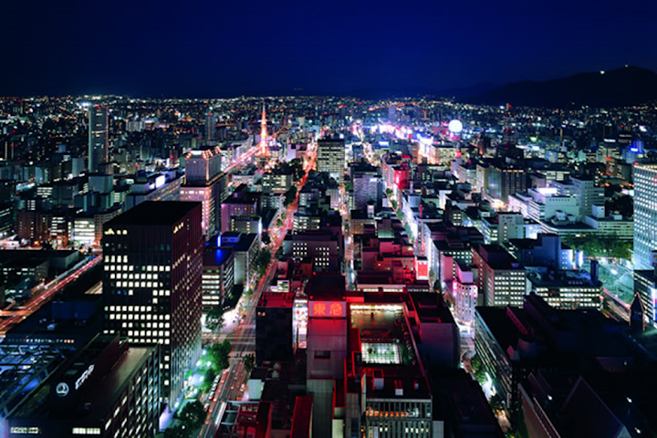
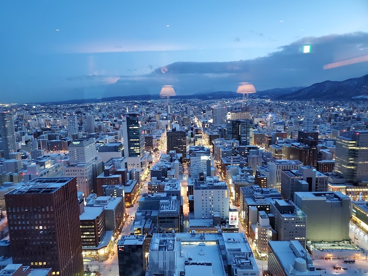
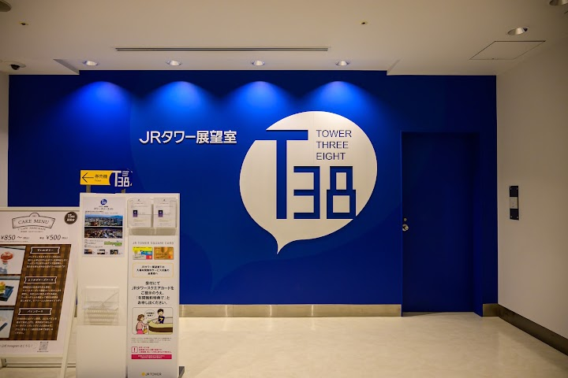

JR Tower Observation Deck T38 (suggested)
A 38th-floor observation deck with 360-degree views of the city, plus a cafe, gift shop & restrooms.
Open in Google Maps (street view, more photos and reviews there)






Visitor tips on finding it and getting there
Nice view point of Sapporo Not expensive to get in, easy book online or just walk in to buy tickets at counter. Have coin lockers service at entrance. Up there's amazing view of Sapporo. Food and drink provide. Not so expensive. Some chairs and benches to sit and enjoy. Nice view from Man and handicap Toilet.
For only 740 yen per person, this spot is definitely worth visiting. Especially compared to the TV Tower. We did find it a bit tricky to locate and had to ask the hotel staff to point us in the right direction. There was no wait time when we went during the day in Golden Week. Elevators run fast. Lots of space upstairs to walk around. A bar area with some seating, that doesn't obstruct the view or prevent you from still taking pictures. The windows were pretty clean considering it had been raining. No annoying souvenir shops with cheap Chinese garbage around every corner either. Just a peace
Unnecessarily hard to find as everyone says. Signs initially lead you towards it, but then abruptly stop, I almost gave up. It's the 6th floor of Stellar Place. Once you know that, I think its pretty easy to find. The observatory itself was very pleasant and spacious. The cafe was nice as well.